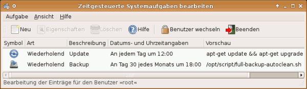
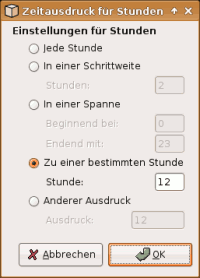

GNOME Schedule
Dieser Artikel wurde für die folgenden Ubuntu-Versionen getestet:
Ubuntu 16.04 Xenial Xerus
Ubuntu 14.04 Trusty Tahr
Zum Verständnis dieses Artikels sind folgende Seiten hilfreich:
GNOME Schedule  ist ein grafisches Werkzeug zum Erstellen und Verwalten zeitgesteuerter Systemaufgaben. Als Frontend für cron und at beherrscht es viele Möglichkeiten, um festzulegen, wann und wie oft eine Aufgabe abgearbeitet wird. Dabei liegt ein großer Vorteil in den eindeutig erkennbaren Zeit- und Datumsangaben (im Vergleich zu einer Crontab) und der übersichtlichen Verwaltung der erstellten Aufgaben.
ist ein grafisches Werkzeug zum Erstellen und Verwalten zeitgesteuerter Systemaufgaben. Als Frontend für cron und at beherrscht es viele Möglichkeiten, um festzulegen, wann und wie oft eine Aufgabe abgearbeitet wird. Dabei liegt ein großer Vorteil in den eindeutig erkennbaren Zeit- und Datumsangaben (im Vergleich zu einer Crontab) und der übersichtlichen Verwaltung der erstellten Aufgaben.
In diesem Artikel wird nur auf die Möglichkeiten der grafischen Bedienoberfläche eingegangen. Der technische Hintergrund ist im Artikel Cron zu finden. Das auf Python basierte Programm ist trotz des Namens nicht speziell für GNOME entwickelt worden, sondern kann unter allen auf der Grafikbibliothek GTK basierenden Desktop-Umgebungen genutzt werden. KDE-Nutzern wird kde-config-cron empfohlen.
Installation¶
Das Programm ist bis einschließlich Ubuntu 14.04 in den offiziellen Paketquellen enthalten. Folgendes Paket muss installiert werden [1]:
gnome-schedule (universe )
 mit apturl
mit apturl
Paketliste zum Kopieren:
sudo apt-get install gnome-schedule
sudo aptitude install gnome-schedule
Fremdpaket¶
Für Ubuntu 16.04 steht ein Fremdpaket  zur Verfügung – allerdings nur für 64-bit-Systeme. Nach dem Herunterladen muss es manuell installiert werden [2].
zur Verfügung – allerdings nur für 64-bit-Systeme. Nach dem Herunterladen muss es manuell installiert werden [2].
Hinweis!
Benutzung¶
GNOME Schedule wird bei Ubuntu-Varianten mit einem Anwendungsmenü über "System -> Geplante Aufgaben" gestartet [3]. Bei Unity kann "Geplante Aufgaben" verwendet werden.
Administrator¶
Wird GNOME Schedule mit Administrator-Rechten [4] bzw. dem Befehl
gksudo gnome-schedule
gestartet, so können zeitgesteuerte Programmaufrufe festgelegt werden, die vom Benutzer root ausgeführt werden sollen. Der Administrator kann zudem in GNOME Schedule den Benutzer wechseln und so für andere Benutzer zeitgesteuerte Prozesse festlegen.

Weiter unterscheidet sich die Benutzung als Administrator nicht von der Bedienung durch andere Benutzer.
Alle Benutzer¶
 Zunächst wird eine neue "Aufgabe" angelegt, wobei die Wahl besteht, eine einmalige oder eine sich wiederholende Aufgabe festzulegen. Bei letzteren können die Zeitabstände zwischen den Wiederholungen beliebig komplex festgelegt werden.
So ist es möglich, eine Aufgabe "täglich" auszuführen oder "von 13 bis 23 Uhr alle 30 Minuten", wobei einfache Ausdrücke für den Menschen lesbar dargestellt und in die Syntax der Crontab umgewandelt werden. Die Darstellung der Zeitausdrücke im Übersichtsfenster kann über den Menüleisten-Eintrag "Ansicht -> Erweitert" auf die crontab-typische Syntax ("* * * * *") umgestellt werden.
Im wesentlichen besteht die angelegte Aufgabe aus der Zeitangabe und dem Befehl, der ausgeführt werden soll. Der Übersicht halber können ein Name und ein Icon für jede Aufgabe gewählt werden.
Experten-Info:
Der Name der Aufgabe und der Speicherpfad des Symbols werden in der Crontab in der jeweiligen Spalte als Kommentar hinterlegt, beispielsweise:
# Update, /usr/share/icons/UbuntuStudio/scalable/actions/reload.svg
Befehle¶
Bei Befehlsaufrufen von Programmen, die nicht in /usr/bin liegen, muss der vollständige Pfad angegeben werden oder die PATH-Variable für cron geändert werden.
Problembehebung¶
cron kümmert sich um die Ausführung der Programme, d.h. viele Umgebungsvariablen werden nicht automatisch gesetzt. Außerdem dürfen im Befehlsaufruf keine Sonderzeichen enthalten sein. Ein Beispiel für einen korrekten Aufruf eines grafischen Programmes:
DISPLAY=:0 LANG=de_DE.UTF-8 zenity --question --text="Zuendfunk um 19:05.\nSoll banshee gestartet werden?" && LANG=de_DE.UTF-8 banshee
IndexError: string index out of range¶
Diese Fehlermeldung (siehe auch 617873) wurde mit der Version 2.1.2 behoben. Da diese Version aber immer noch nicht in den offiziellen Paketquellen enthalten ist, folgt man der Anleitung im genannten Fehlerbericht und wendet den Patch auf die Datei /usr/share/gnome-schedule/at.py an.
Links¶
Alarm Clock - Wecker und Stoppuhr
Skripte/zeitgesteuerte Befehlsausführung - Lösungen für die Kommandozeile
- Erstellt mit Inyoka
-
 2004 – 2017 ubuntuusers.de • Einige Rechte vorbehalten
2004 – 2017 ubuntuusers.de • Einige Rechte vorbehalten
Lizenz • Kontakt • Datenschutz • Impressum • Serverstatus -
Serverhousing gespendet von